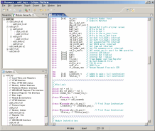
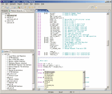

This Verilog source code is from The USB 2.0 Function Project in OPENCORES.ORG.
"Module Hierarchy" view in upper left shows a hierarchical list
of module instantiation.
The top module is "usbf_top". It has four instance of modules,
which are usbf_utmi_if, usbf_pl, usbf_mem_arb, usbf_rf and usbf_wb. The
instance names are u0, u1, u2, u4 and u5. usbf_utmi_if has a instance of
usbf_utmi_ls. You can "expand" usbf_rt, when you click left "+"
of usbf_rt.
"Outline" view in lower left shows content outline of usbf_top.v. It includes module definition, module instantiation, task, function and comment with valid sentence in a Verilog source code.
The editor view shows Verilog source code of usbf_top.v. The Verilog reserved word are high lighted, such as "wire", "reg", "assign" and "always".

This is content assist popup. It is shown, when you type "assign r" and Ctrl+space. The popup shows word list which has ''r' as first character'. The content assist is "context depended". So you can see instantiatable module list, when you type only "r".
This is the problems view, which show errors and warnings. Eclipse Verilog Editor spawns Verilog/VHDL compiler by child process and parses error messages.
This is the preference page. You can modify colors and font styles in editor and external Verilog complier.
This VHDL source code is from T80 cpu Project in OPENCORES.ORG.
This is screenshot on VHDL.
This is Simuletor builder dialog.